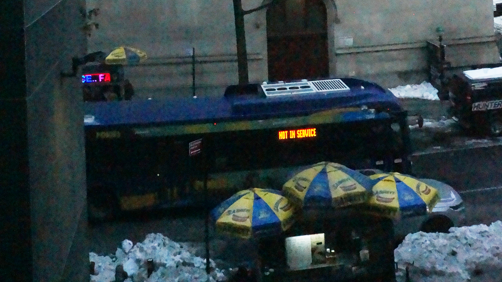

The reason for choosing a compositional idea like this because the bus is the center piece, and the surrounding makes it almost blend effect, with the yellow and blue colors from the umbrellas. With the bus being also yellowish but mainly blue makes it blend in. The Neon lights displayed on the side of the MTA bus just makes it almost POP.